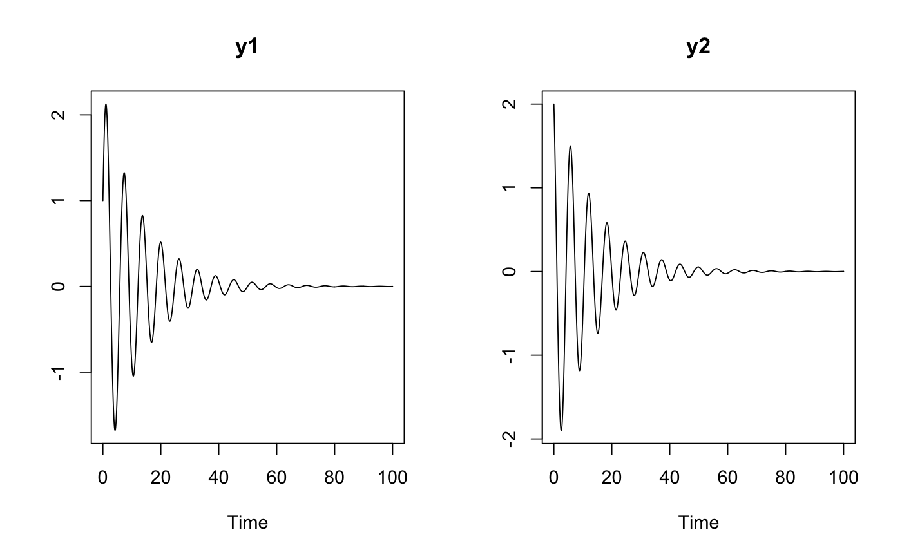

Simulate an AZRmodel
Simulation function for azrmod objects which is able to handle dosing events.
# S3 method for azrmod simulate(model, simtime = NULL, IC = NULL, parameters = NULL, dosing_table = NULL, FLAGdosOut = FALSE, outputs = NULL, opt_method_stiff = TRUE, opt_abstol = 1e-06, opt_reltol = 1e-06, opt_minstep = 0, opt_maxstep = 0, opt_initstep = 0, opt_maxnumsteps = 1e+05, opt_maxerrtestfails = 50, opt_maxorder_stiff = 5, opt_maxorder_nonstiff = 12, opt_maxconvfails = 10, opt_maxnonlineariter = 3, verbose = FALSE)
Arguments
| model | An object of class |
|---|---|
| simtime | Simulation time vector. If scalar provided then 1001 simulation steps will be used. If not provided (20) seq(0,20,1000) will be used if no dosing_table provided. If not provided and a dosing_table is provided, seq(0,1.5x the max dosing time,1000) is used. |
| IC | Named vector with numeric initial conditions for ALL states. If not provided the initial conditions stored in the model will be used as defaults. Important: If initial conditions are provided, then these need to be NUMERIC and be provided for ALL states! If the model contains non-numeric initial conditions, these will be ignored. Basically, user provided initial conditions overwrite all other settings. If the model itself does contain non-numeric initial conditions, then it might be more useful to change these via parameter settings, using the "parameters" input argument. |
| parameters | A named parameter vector to be used for simulation. Named parameters need to be present in the model. Initial condition definitions in AZRmodels can be non-numeric mathematical expressions and depend on states, parameters, variables, reactions, and functions. A states IC can depend on a previously defined state in the model. Otherwise an error message will appear during the import of a model from text. |
| dosing_table | A dataframe defining a dosing table with the following columns:
|
| FLAGdosOut | If TRUE then dosing table information will be added to the output variable. If FALSE then it will not be added. This flag only has effect if a dosing_table is given as input argument. |
| outputs | A vector with names of outputs to return from simulation. By default (NULL) all states, variables, reactions, are returned. |
| opt_method_stiff | Flag (FALSE: non-stiff, TRUE: stiff) |
| opt_abstol | Double value for absolute tolerance |
| opt_reltol | Double value for relative tolerance |
| opt_minstep | Double value for minimal integrator step-size |
| opt_maxstep | Double value for maximal integrator step-size |
| opt_initstep | Double value for initial step-size to be attempted |
| opt_maxnumsteps | Integer value for maximum number of steps between two outputs |
| opt_maxerrtestfails | Integer value for maximum number of error test failures in one step |
| opt_maxorder_stiff | Integer value for maximum order of linear multistep method for STIFF solver (BDF) |
| opt_maxorder_nonstiff | Integer value for maximum order of linear multistep method for NONSTIFF solver (Adams) |
| opt_maxconvfails | Integer value for maximum number of nonlinear solver convergence failures in one step |
| opt_maxnonlineariter | Integer value for maximum number of nonlinear solver iterations permitted per step |
| verbose | Integer flag for outputting additional diagnostic information |
Value
A data.frame object of class azrsim which contains simulations.
Examples
# simple harmonic oscillator simulation sho_model <- create_model(system.file("examples/sho.txt", package="AZRsim")) sho_sim <- simulate(sho_model, seq(1, 100, by = 0.1)) sho_sim <- simulate(sho_model, 100, parameters = c("theta" = 0.5)) sho_sim <- simulate(sho_model, 100, IC = c("y1" = 1, "y2" = 2)) plot(sho_sim)# simple one compartment dosing one_cpt <- create_model(system.file("examples/one_cpt_dt.txt", package="AZRsim"))#> Warning: check_azrmod: AZRmodel contains state names with a single character name. Try to avoid that if you plan to use NONMEM or MONOLIXdt <- data.frame("TIME" = seq(1,9, by = 1), "DOSE" = 40, "DURATION" = 0, "INPUT" = 1, "LAGTIME" = 0, stringsAsFactors = FALSE) one_cpt_sim <- simulate(one_cpt, seq(0, 10, by=0.01), dosing_table = dt, output = c("y")) plot(one_cpt_sim, lwd = 2, plot_names = "blood")